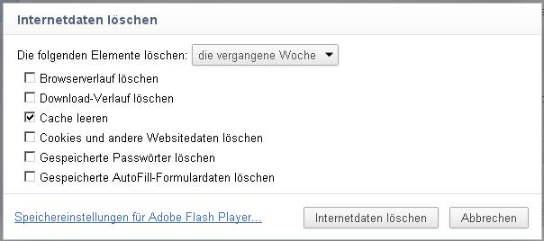
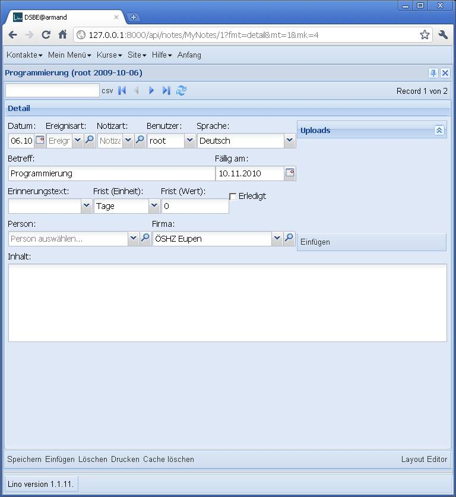
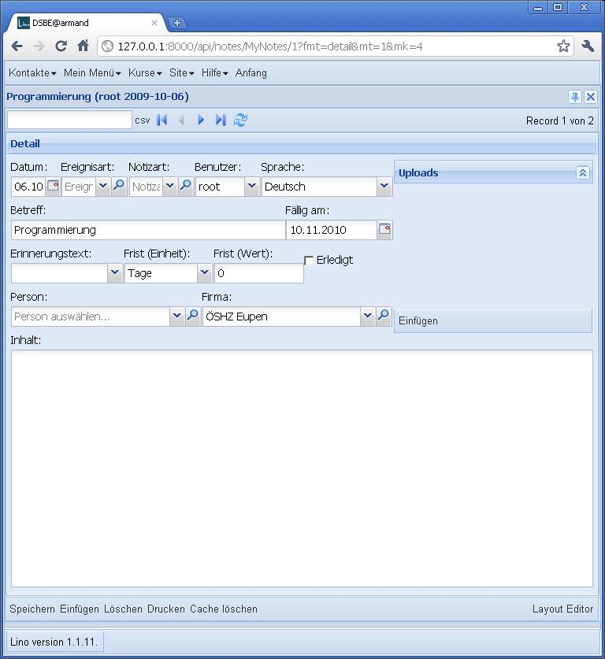

20110504¶
Der Cache¶
Weiter mit dem Rätsel von gestern: wieso funktioniert lino.ui.extjs3 nicht mehr?
Habe ich bei den Arbeiten am extjs4 versehentlich noch irgendwas im extjs3 verändert?
Oder ist meine Kopie von ExtJS3 kaputt?
Oder haben meine Browser sich die Version 4 im Cache behalten?
- ExtJS 3 auf meinem Rechner neu installieren bringt keine Änderung.
Ich habe die beiden Version in
s:\ext-3.3.1unds:\ext-4.0.0stehen. - Upgrade des Lino auf Tups: dort funktioniert es. Auf Tups ist noch Ext 3.2.1 installiert, auf meinem Rechner ist 3.3.1, aber das dürfte keinen Unterschied machen.
- Mit dem IE (den hatte ich noch nicht benutzt mit extjs4) funktioniert es auch auf meinem Rechner.
Also irgendwas von der Version 4 ist im Cache meines Firefox und meines Chrome hängen geblieben. Also in Chrome
{kind=link}
Richtig, das war’s. Die Erklärung ist plausibel: für beide Versionen ist die folgende Zeile im Header gleich:
<script type="text/javascript" src="/media/extjs/ext-all-debug.js">
Und mein Development Server benutzt ja django.views.static, um diese Datei zu servieren. Der teilt meinen Browsern wahrscheinlich auch das Datum mit, und nach dem Rückschalten auf die alte Version sagen sich die Browser, dass sie die nicht neu anzufragen brauchen.
Puh! Mehr als eine Stunde hab ich gebraucht, um darauf zu kommen!
Ob dieses Problem auch mit dem Apache passiert?
Oder nur mit django.views.static?
Erinnerungen¶
- Erinnerungen sind jetzt im Hauptbildschirm umgekehrt chronologisch sortiert, und zudem in drei Kolonnen “Heute”, “Vergangen” und “Zukunft” verteilt.
- Ältere Erinnerungen (älter als 7 Tage, aber die Zahl ist
global konfigurierbar in der
welcome.html) werden im Hauptbildschirm nicht mehr angezeigt.
Text-Editor¶
Das TextArea-Feld für mehrzeilige Texte nahm in Details nur die Hälfte des vertikal verfügbaren Platzes ein. Links wie es bisher war, rechts wie es jetzt ist:
 {kind=link}
{kind=link}
Grund war, dass das ct_panel autoHeight auf true hat. Beim ct_panel eines TextfieldElements darf ich das scheinbar nicht (in anderen Fällen dagegen muss es sein).
Erinnerungen und mehrzeilige Texte in Grids¶
- Erinnerungen im Hauptbildschirm für Notizen und Verträge zeigen jetzt auch wieder die Person und/oder die Firma an.
- Ich habe noch am Aussehen der Tabelle der Erinnerungen im Hauptbildschirm rumgespielt. Ist jetzt leserlicher. Zwei Kolonnen “Ausblick” und “Rückblick”. “Ausblick” beginnt mit heute und ist chronologisch sortiert. “Rückblick” beginnt mit gestern und ist umgekehrt chronologisch sortiert.
- Ich habe auch die Erklärung gefunden, weshalb Aufzählungen, Fett und Kursiv nicht “korrekt” angezeigt werden, wenn ich in einer Grid selbstgenerierten HTML anzeige. ExtJS hat das nicht absichtlich gemacht, sondern das ist nötig für das allgemeine Layout und kann umgangen werden: http://www.sencha.com/learn/Manual:Ext_CSS_Overview